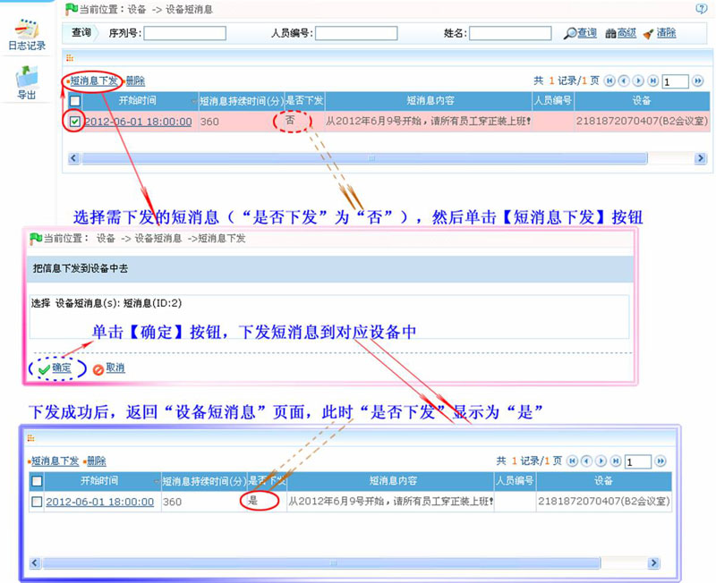
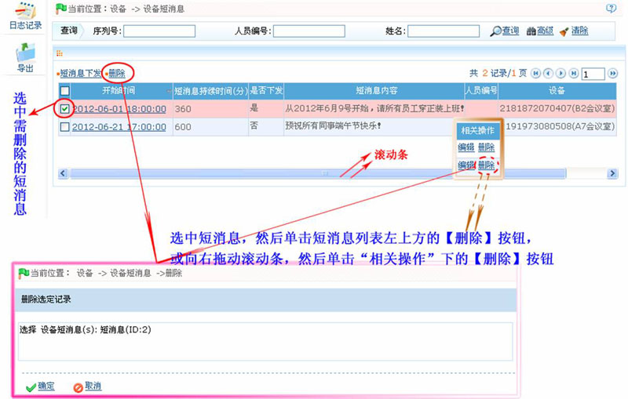

5.4 设备短消息管理
设备短消息管理，主要进行的是短消息下发、编辑和删除操作。
5.4.1 短消息下发
用户在【人员】页面中添加的短消息，必须通过短消息下发功能下发到对应的设备中，相关人员才能查看到相应短消息。
短消息下发的具体步骤如下：
1、单击【设备】 【设备短消息】，进入设备短消息页面。
【设备短消息】，进入设备短消息页面。
2、在短消息列表中，单击选中需下发的短消息，然后单击【短消息下发】按钮，进入下发短消息的确认页面。
3、单击【确定】按钮开始下发，下发成功后，自动返回设备短消息页面。
具体操作页面，如下图所示：

如图所示，短消息列表中的“是否下发”列显示短消息是否已下发到设备，“否”代表未下发；“是”代表已下发。另外，“人员编号”列显示该条短消息对应的人员（对公短消息不显示人员编号，即对应所有人员）。
短消息下发成功，对应的人员在短消息的有效时间内在设备上考勤的时，即能查看到该短消息。
5.4.2 编辑短消息
单击短消息的开始时间，或向右拖动滚动条，然后单击短消息所在行的“相关操作”下的【编辑】，进入编辑页面。
具体操作方法如下：
1、在短消息列表中，单击短消息的“开始时间”，或向右拖动滚动条，然后单击“相关操作”下的【编辑】按钮，进入编辑短消息页面：

2、根据需要修改各参数（短消息内容、开始时间、短消息持续时间的），设置完成后，单击【确定】按钮保存修改。
5.4.3 删除短消息
1、选中需要删除的短消息，然后点击短消息列表左上方的【删除】，或直接单击短消息所在行的“相关操作”下的【删除】进入删除确认页面：

2、单击【确定】按钮，删除被选中的短消息。